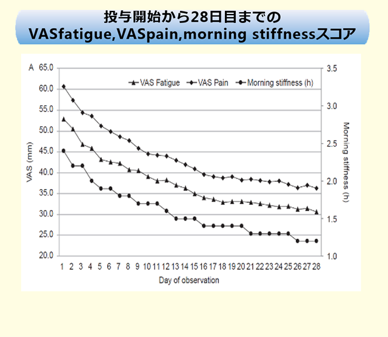
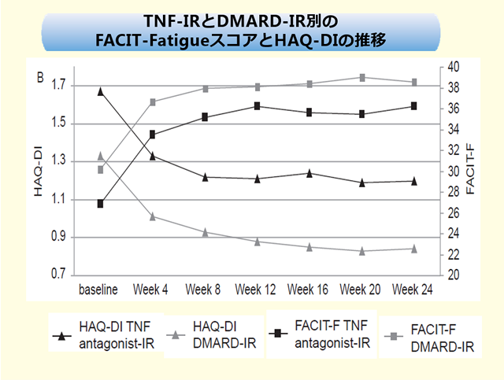

アクテムラ投与開始4週以内の早期に「疲労VAS」「疼痛VAS」「朝のこわばり」が改善した(TAMARA Study)
【目的】ドイツの実臨床下におけるアクテムラの有効性・安全性を評価する（PhaseⅢb試験 多施設オープンラベル試験）
【対象】罹病期間6ヵ月以上で1剤以上のDMARDsまたはBioに効果不十分であり、アクテムラ治療を受けた患者286名。
【方法】全ての登録患者の24週後の疾患活動性・朝のこわばり・FACIT-FatigueスコアとHAQ-DI等を調査。ACTは8mg/kgを4週に1回点滴静注。


アクテムラ1回の投与でQOL関連指標（VASや朝のこわばり）の改善が見られた